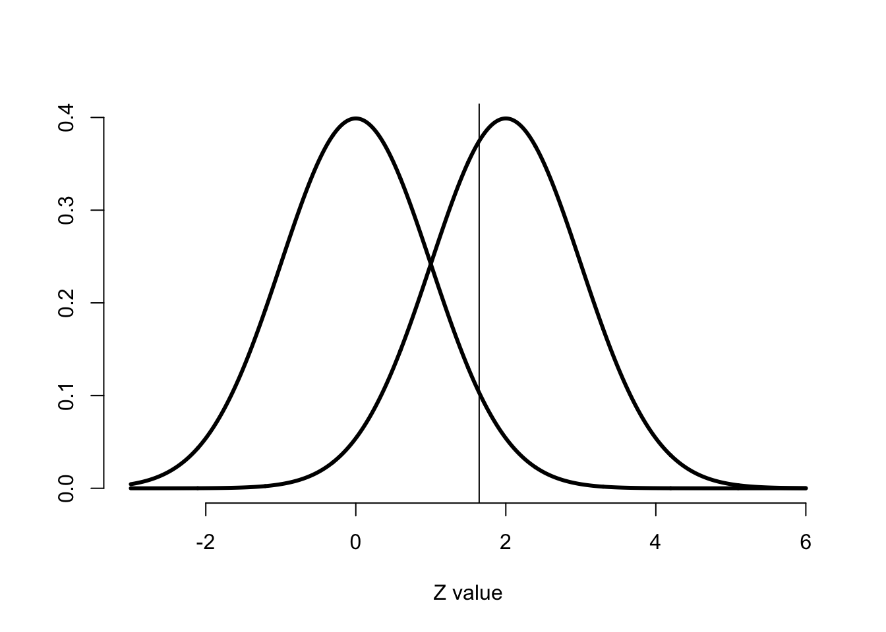

第5章 统计推断
5.1 导论
- 定义 用需要考虑不确定度的含噪音的统计学数据推断事实
- 工具 随机化 随机采样 采样模型 假设检验 置信区间 概率模型 实验设计 bootstraping 排列交换随机
- 类型
- 频率派 使用概率的频率解释来控制错误率
- 贝叶斯派 给定概率与数据概率哪个靠谱
5.2 概率
- 术语
- 样本空间 Ω
- 事件 样本空间子集 E
- 单独事件 ω
- 空事件 ∅
- \(ω∈E\) ω发生E发生
- \(ω∉E\) ω发生E不发生
- \(E⊂F\) E发生则F发生
- \(E∩F\) EF一起发生
- \(E∪F\) EF中至少一个发生
- \(E∩F=∅\) EF互斥
- \(E^c\) 或 \(\bar E\) E不发生
- 概率
- 对事件 \(E\subset \Omega\), \(0 \leq P(E) \leq 1\)
- \(P(\Omega) = 1\)
- 如果 \(E_1\) 与 \(E_2\) 互斥 有\(P(E_1 \cup E_2) = P(E_1) + P(E_2)\).
- 概率无限可加性 \(P(\cup_{i=1}^n A_i) = \sum_{i=1}^n P(A_i)\)
- \(P(\emptyset) = 0\)
- \(P(E) = 1 - P(E^c)\)
- \(P(A \cup B) = P(A) + P(B) - P(A \cap B)\)
- 如果 \(A \subset B\) 则 \(P(A) \leq P(B)\)
- \(P\left(A \cup B\right) = 1 - P(A^c \cap B^c)\)
- \(P(A \cap B^c) = P(A) - P(A \cap B)\)
- \(P(\cup_{i=1}^n E_i) \leq \sum_{i=1}^n P(E_i)\)
- \(P(\cup_{i=1}^n E_i) \geq \max_i P(E_i)\)
- 随机变量
- 实验的数值输出
- 离散随机变量取可数的概率 \(P(X = k)\)
- 连续随机变量取连续区间子集概率 \(P(X \in A)\)
- 概率质量函数（PMF）<- 离散随机变量
- 对于所有 \(x\) \(p(x) \geq 0\)
- \(\sum_{x} p(x) = 1\)
- 概率密度函数（PDF）<- 连续随机变量
- 对于所有 \(x\) \(f(x) \geq 0\)
- \(f(x)\) 下面积为1
- 累计概率函数（CDF）
- 定义 \(F(x) = P(X \leq x)\)
- 生存函数 \(S(x) = P(X > x)\) \(S(x) = 1 - F(x)\)
- 对于连续函数 CDF是PDF的积分
- 分位数 \(\alpha^{th}\)
- \(F(x_\alpha) = \alpha\)
- \(50^{th}\) 分位数是中位数
5.3 期望
离散随机变量均值 \(E[X] = \sum_x xp(x)\)
\(E[X]\) 代表质量与位置的中心 \(\{x, p(x)\}\)
连续随机变量均值 \(E[X] = \mbox{the area under the function}~~~ t f(t)\)
期望值是线性可加的
如果 \(a\) 与 \(b\) 不随机 \(X\) 与 \(Y\) 是随机变量
- \(E[aX + b] = a E[X] + b\)
- \(E[X + Y] = E[X] + E[Y]\)
样本均值是总体均值\(\mu\)的无偏估计的证明
\[\begin{eqnarray*} E\left[ \frac{1}{n}\sum_{i=1}^n X_i\right] & = & \frac{1}{n} E\left[\sum_{i=1}^n X_i\right] \\ & = & \frac{1}{n} \sum_{i=1}^n E\left[X_i\right] \\ & = & \frac{1}{n} \sum_{i=1}^n \mu = \mu. \end{eqnarray*}\]
5.4 方差
- 描述随机变量的离散情况
- 如果 \(X\) 是均值 \(\mu\) 的随机变量 其方差为\(Var(X) = E[(X - \mu)^2]\)
- 离开均值距离期望的平方
- 计算公式 \(Var(X) = E[X^2] - E[X]^2\)
- 如果 \(a\) 是常数有 \(Var(aX) = a^2 Var(X)\)
- 方差的开方是标准差 单位与 \(X\) 一致
- 车比雪夫不等式（Chebyshev’s inequality）边界极为保守 \[ P(|X - \mu| \geq k\sigma) \leq \frac{1}{k^2} \]
5.5 独立性
独立事件
- 两事件 \(A\) 与 \(B\) 在 \(P(A \cap B) = P(A)P(B)\) 下独立
- 在 \(P([X \in A] \cap [Y \in B]) = P(X\in A)P(Y\in B)\) 下两随机变量 \(X\) 与 \(Y\) 独立
- 对于一组随机独立变量\(X_1, X_2, \ldots, X_n\)有 \(f(x_1,\ldots, x_n) = \prod_{i=1}^n f_i(x_i)\)
- iid随机变量（independent and identically distributed） 来自同一分布相互独立的随机变量
协方差（covariance）
- \(Cov(X, Y) = E[(X - \mu_x)(Y - \mu_y)] = E[X Y] - E[X]E[Y]\)
- \(Cov(X, Y) = Cov(Y, X)\)
- \(Cov(X, Y)\) 可以有正负
- \(|Cov(X, Y)| \leq \sqrt{Var(X) Var(y)}\)
相关性（correlation）
- \(X\) 与 \(Y\) 的相关性 \(Cor(X, Y) = Cov(X, Y) / \sqrt{Var(X) Var(y)}\)
- \(-1 \leq Cor(X, Y) \leq 1\)
- 只有对常数 \(a\) 与 \(b\)满足 \(X = a + bY\) 时\(Cor(X, Y) = \pm 1\)
- \(Cor(X, Y)\) 无单位
- \(Cor(X, Y) = 0\) 时 \(X\) 与 \(Y\) 不相关
- \(Cor(X,Y)\) 越接近1 \(X\) 与 \(Y\) 越正相关 反之接近-1 负相关
- \(\{X_i\}_{i=1}^n\) 是一组随机变量 当 \(\{X_i\}\) 不相关时 \(Var\left(\sum_{i=1}^n a_i X_i + b\right) = \sum_{i=1}^n a_i^2 Var(X_i)\)
- 如果一组随机变量\(\{X_i\}\)不相关 方差的和等于和的方差 非标准差
样本均值方差的推导
\[\begin{eqnarray*} Var(\bar X) & = & Var \left( \frac{1}{n}\sum_{i=1}^n X_i \right)\\ \\ & = & \frac{1}{n^2} Var\left(\sum_{i=1}^n X_i \right)\\ \\ & = & \frac{1}{n^2} \sum_{i=1}^n Var(X_i) \\ \\ & = & \frac{1}{n^2} \times n\sigma^2 \\ \\ & = & \frac{\sigma^2}{n} \end{eqnarray*}\]
- 当 \(X_i\) 独立且方差为 \(Var(\bar X) = \frac{\sigma^2}{n}\)
- \(\sigma/\sqrt{n}\) 为样本均值的标准误
- 样本均值的标准误就是样本均值分布的标准差
- \(\sigma\) 是一次观察分布的标准差
- 样本均值要比一次观察变化小 因此除以\(\sqrt{n}\)
样本方差
- \(S^2 = \frac{\sum_{i=1}^n (X_i - \bar X)^2}{n-1}\)
- 总体方差 \(\sigma^2\)的估计
- 计算 \(\sum_{i=1}^n (X_i - \bar X)^2 = \sum_{i=1}^n X_i^2 - n \bar X^2\)
- 均值偏差平方的均值
- 样本方差是总体方差的无偏估计
\[\begin{eqnarray*} E\left[\sum_{i=1}^n (X_i - \bar X)^2\right] & = & \sum_{i=1}^n E\left[X_i^2\right] - n E\left[\bar X^2\right] \\ \\ & = & \sum_{i=1}^n \left\{Var(X_i) + \mu^2\right\} - n \left\{Var(\bar X) + \mu^2\right\} \\ \\ & = & \sum_{i=1}^n \left\{\sigma^2 + \mu^2\right\} - n \left\{\sigma^2 / n + \mu^2\right\} \\ \\ & = & n \sigma^2 + n \mu ^ 2 - \sigma^2 - n \mu^2 \\ \\ & = & (n - 1) \sigma^2 \end{eqnarray*}\]
澄清
- 假定 \(X_i\) 是 iid 均值 \(\mu\) 方差 \(\sigma^2\)
- \(S^2\) 估计 \(\sigma^2\)
- \(S^2\) 的计算涉及除 \(n-1\)
- \(S / \sqrt{n}\) 估计 \(\sigma / \sqrt{n}\) 是均值的标准误
5.6 条件概率
- \(B\) 为一个事件 有 \(P(B) > 0\)
- \(B\) 出现条件下 \(A\) 的条件概率为 \(P(A ~|~ B) = \frac{P(A \cap B)}{P(B)}\)
- 如果 \(A\) 与 \(B\) 独立 有 \(P(A ~|~ B) = \frac{P(A) P(B)}{P(B)} = P(A)\)
5.7 贝叶斯定理
\[ P(B ~|~ A) = \frac{P(A ~|~ B) P(B)}{P(A ~|~ B) P(B) + P(A ~|~ B^c)P(B^c)}. \]
- 2*2 列联表 - 诊断测试

5.8 常见分布
- 贝努力分布
- 二元输出变量
- 数值为0或1 概率\(p\) 与 \(1-p\)
- \(X\)的PMF是\(P(X = x) = p^x (1 - p)^{1 - x}\)
- 均值 \(p\) 方差 \(p(1 - p)\)
- 如果有iid的贝努力观察\(x_1,\ldots, x_n\) 似然函数 \(\prod_{i=1}^n p^{x_i} (1 - p)^{1 - x_i} = p^{\sum x_i} (1 - p)^{n - \sum x_i}\)
- 似然函数依赖\(x_i\)的和 \(\sum_i x_i / n\) 包含了所有 \(p\) 的可能性
- 最大化似然函数可以得到 \(p\) 的估计
- 二项分布
- PMF \[ P(X = x) = \left( \begin{array}{c} n \\ x \end{array} \right) p^x(1 - p)^{n-x} \] 对于 \(x=0,\ldots,n\)
- 正态分布
- PDF \((2\pi \sigma^2)^{-1/2}e^{-(x - \mu)^2/2\sigma^2}\)
- \(X\) 为均值 \(E[X] = \mu\) 方差 \(Var(X) = \sigma^2\) 的iid随机变量
- 写作\(X\sim \mbox{N}(\mu, \sigma^2)\)
- 均值 \(\mu = 0\) 方差 \(\sigma = 1\) 是标准正态分布
- 标准正态函数写作 \(\phi\)
- 标准正态随机变量用 \(Z\) 表示
- 如果 \(X \sim \mbox{N}(\mu,\sigma^2)\) 并且 \(Z = \frac{X -\mu}{\sigma}\) 是标准正态函数
- 如果 \(Z\) 是标准正态函数 \(X = \mu + \sigma Z \sim \mbox{N}(\mu, \sigma^2)\)
- 非标准正态密度函数 \(\phi\{(x - \mu) / \sigma\}/\sigma\)
- 正态似然函数对方差的估计是有偏的
- 正态的和是正态 样本均值正态
- 正态的平方是卡方
- 正态分布
- 泊松分布
- PMF \(P(X = x; \lambda) = \frac{\lambda^x e^{-\lambda}}{x!}\)
- 均值方差均为 \(\lambda\)
- 可看做很短时间间隔中发生事件的概率 模拟速率 其中\(\lambda * h\)小于1 则各时间段独立
- \(X \sim Poisson(\lambda t)\) \(\lambda = E[X / t]\)是速率 \(t\) 是总时间
- \(n\) 大 \(p\) 小是对二项分布的模拟
- \(X \sim \mbox{Binomial}(n, p)\), \(\lambda = n p\)
5.9 渐进
- 样本接近无穷大时统计量的行为
- 频率派的基石
- 大数理论（LLN） 样本数量越多 均值接近期望
- 中心极限理论 (CLT) iid 变量均值的分布标准化后随样本数增加接近标准正态分布 \[ \frac{\bar X_n - \mu}{\sigma / \sqrt{n}} = \frac{\mbox{Estimate} - \mbox{Mean of estimate}}{\mbox{Std. Err. of estimate}} \]
- 可根据变量分布来 知道均值 方差 计算出样本均值标准误 就可以根据CLT计算逼近的统计量
- 置信区间
- 根据CLT随机区间\(\bar X_n \pm z_{1-\alpha/2}\sigma / \sqrt{n}\) 包括 \(\mu\) 的概率逼近于 100\((1-\alpha)\)% \(z_{1-\alpha/2}\)为标准正态分布\(1-\alpha/2\)的分位数 \(100(1 - \alpha)\)% 为置信区间 \(\sigma\) 可用样本估计 \(s\) 来近似
- 估计是基于分布假设的 如果分布有解析解 则置信区间可以更准确的得到估计
- 先生成不依赖参数的统计量
- 根据统计量的概率分布计算参数的边界
5.10 置信区间
- 卡方分布
- 假定 \(S^2\) 是来自\(n\)个 iid \(N(\mu,\sigma^2)\) 数据样本的方差 有\(\frac{(n - 1) S^2}{\sigma^2} \sim \chi^2_{n-1}\) 符合自由度\(n-1\)的卡方分布
- 不对称分布
- 均值是自由度 方差是两倍的自由度
- 方差的置信区间
\[\begin{eqnarray*} 1 - \alpha & = & P \left( \chi^2_{n-1, \alpha/2} \leq \frac{(n - 1) S^2}{\sigma^2} \leq \chi^2_{n-1,1 - \alpha/2} \right) \\ \\ & = & P\left(\frac{(n-1)S^2}{\chi^2_{n-1,1-\alpha/2}} \leq \sigma^2 \leq \frac{(n-1)S^2}{\chi^2_{n-1,\alpha/2}} \right) \\ \end{eqnarray*}\]
\(\left[\frac{(n-1)S^2}{\chi^2_{n-1,1-\alpha/2}}, \frac{(n-1)S^2}{\chi^2_{n-1,\alpha/2}}\right]\) 是 \(\sigma^2\) 的 \(100(1-\alpha)\%\) 置信区间
依赖正态性假设 开方后得到 \(\sigma\) 的置信区间
Gosset的 t 分布
- 比正态分布尾厚
- 考虑自由度 自由度大时接近正态分布
- \(\frac{Z}{\sqrt{\frac{\chi^2}{df}}}\)
- 假定 \((X_1,\ldots,X_n)\) 是 iid \(N(\mu,\sigma^2)\) 有 \(\frac{\bar X - \mu}{\sigma / \sqrt{n}}\) 是标准正态分布 \(\sqrt{\frac{(n - 1) S^2}{\sigma^2 (n - 1)}} = S / \sigma\) 是卡方除以自由度的开方
- 有 \[ \frac{\frac{\bar X - \mu}{\sigma /\sqrt{n}}}{S/\sigma} = \frac{\bar X - \mu}{S/\sqrt{n}} \] 服从自由度\(n-1\)的\(t\)分布
- 均值的置信区间
\[\begin{eqnarray*} & & 1 - \alpha \\ & = & P\left(-t_{n-1,1-\alpha/2} \leq \frac{\bar X - \mu}{S/\sqrt{n}} \leq t_{n-1,1-\alpha/2}\right) \\ \\ & = & P\left(\bar X - t_{n-1,1-\alpha/2} S / \sqrt{n} \leq \mu \leq \bar X + t_{n-1,1-\alpha/2}S /\sqrt{n}\right) \end{eqnarray*}\]
\(t_{df,\alpha}\) 是t分布的 \(\alpha^{th}\) 分位数 自由度 \(df\)
- t检验不适合有偏分布 置信区间中心也不在均值上
5.11 似然函数
- 一组数据的似然函数是数据固定下参数的联合概率密度函数
- 似然函数可用来估计参数 是参数的函数
- 似然函数比估计两个可能参数值的可能性
- 给定模型与数据 似然函数包含所有参数可能性
- 样本独立时 参数的似然函数是各独立样本似然函数的乘积
- 参数使似然函数概率取最大值时真实的可能性更大 更支持这组数据 这个估计是最大似然估计（MLE）
5.12 贝叶斯推断
- \(\mbox{Posterior} \propto \mbox{Likelihood} \times \mbox{Prior}\)
- 先验beta分布
- 01之间
- 依赖 \(\alpha\) \(\beta\) 的概率密度函数
\[ \frac{\Gamma(\alpha + \beta)}{\Gamma(\alpha)\Gamma(\beta)} p ^ {\alpha - 1} (1 - p) ^ {\beta - 1} ~~~~\mbox{for} ~~ 0 \leq p \leq 1 \]
- 均值 \(\alpha / (\alpha + \beta)\)
- 方差 \(\frac{\alpha \beta}{(\alpha + \beta)^2 (\alpha + \beta + 1)}\)
- \(\alpha = \beta = 1\) 为均匀分布
- 后验beta分布
- 参数\(\tilde \alpha = x + \alpha\) \(\tilde \beta = n - x + \beta\) 的beta分布
\[\begin{align} \mbox{Posterior} &\propto p^x(1 - p)^{n-x} \times p^{\alpha -1} (1 - p)^{\beta - 1} \\ & = p^{x + \alpha - 1} (1 - p)^{n - x + \beta - 1} \end{align}\]
- 后验均值
\[\begin{align} E[p ~|~ X] & = \frac{\tilde \alpha}{\tilde \alpha + \tilde \beta}\\ \\ & = \frac{x + \alpha}{x + \alpha + n - x + \beta}\\ \\ & = \frac{x + \alpha}{n + \alpha + \beta} \\ \\ & = \frac{x}{n} \times \frac{n}{n + \alpha + \beta} + \frac{\alpha}{\alpha + \beta} \times \frac{\alpha + \beta}{n + \alpha + \beta} \\ \\ & = \mbox{MLE} \times \pi + \mbox{Prior Mean} \times (1 - \pi) \end{align}\]
- 后验均值是先验均值与最大似然估计的混合
- 当 \(n\) 变大 \(\pi\) 接近 \(1\) 先验作用小
- 当 \(n\) 很小 先验作用大
- 当数据量够大时 先验概率作用就很小了
- 当先验概率足够稳定 数据就作用不大了
- 信任区间
- \(95\%\) 信任区间 \([a, b]\) 会满足\(P(p \in [a, b] ~|~ x) = .95\)
- 最高后验密度 (HPD) 区间
5.13 两独立样本t检验
\(X_1,\ldots,X_{n_x}\) 为 iid \(N(\mu_x,\sigma^2)\)
\(Y_1,\ldots,Y_{n_y}\) 为 iid \(N(\mu_y, \sigma^2)\)
\(\bar X\), \(\bar Y\), \(S_x\), \(S_y\) 为均值与标准差
根据均值与方差的线性组合 有 \(\bar Y - \bar X\) 也是正态 均值 \(\mu_y - \mu_x\) 方差 \(\sigma^2 (\frac{1}{n_x} + \frac{1}{n_y})\)
混合方差为 \(S_p^2 = \{(n_x - 1) S_x^2 + (n_y - 1) S_y^2\}/(n_x + n_y - 2)\) 为\(\sigma^2\)的良好估计
该估计为无偏估计
\[\begin{eqnarray*} E[S_p^2] & = & \frac{(n_x - 1) E[S_x^2] + (n_y - 1) E[S_y^2]}{n_x + n_y - 2}\\ & = & \frac{(n_x - 1)\sigma^2 + (n_y - 1)\sigma^2}{n_x + n_y - 2} \end{eqnarray*}\]
该估计独立于 \(\bar Y - \bar X\) 因为方差独立于均值
两个独立的卡方变量之和是自由度之和的卡方值
\[\begin{eqnarray*} (n_x + n_y - 2) S_p^2 / \sigma^2 & = & (n_x - 1)S_x^2 /\sigma^2 + (n_y - 1)S_y^2/\sigma^2 \\ \\ & = & \chi^2_{n_x - 1} + \chi^2_{n_y-1} \\ \\ & = & \chi^2_{n_x + n_y - 2} \end{eqnarray*}\]
构建统计量 \[ \frac{\frac{\bar Y - \bar X - (\mu_y - \mu_x)}{\sigma \left(\frac{1}{n_x} + \frac{1}{n_y}\right)^{1/2}}}{\sqrt{\frac{(n_x + n_y - 2) S_p^2}{(n_x + n_y - 2)\sigma^2}}} = \frac{\bar Y - \bar X - (\mu_y - \mu_x)}{S_p \left(\frac{1}{n_x} + \frac{1}{n_y}\right)^{1/2}} \]
该统计量为符合自由度 \(n_x + n_y - 2\) 的 \(t\) 分布
置信区间 \[ \bar Y - \bar X \pm t_{n_x + n_y - 2, 1 - \alpha/2}S_p\left(\frac{1}{n_x} + \frac{1}{n_y}\right)^{1/2} \]
方差不等 \[ \bar Y - \bar X \sim N\left(\mu_y - \mu_x, \frac{s_x^2}{n_x} + \frac{s_y^2}{n_y}\right) \]
统计量 \[ \frac{\bar Y - \bar X - (\mu_y - \mu_x)}{\left(\frac{s_x^2}{n_x} + \frac{s_y^2}{n_y}\right)^{1/2}} \] 近似于自由度 \[ \frac{\left(S_x^2 / n_x + S_y^2/n_y\right)^2} {\left(\frac{S_x^2}{n_x}\right)^2 / (n_x - 1) + \left(\frac{S_y^2}{n_y}\right)^2 / (n_y - 1)} \] 的\(t\)分布
5.14 假设检验
- 使用数据做决定
- 空假设 \(H_0\) 无变化
- 备择假设 \(H_a\) 或大 或小 或不等
- 真值表
| Truth | Decide | Result |
|---|---|---|
| \(H_0\) | \(H_0\) | Correctly accept null |
| \(H_0\) | \(H_a\) | Type I error |
| \(H_a\) | \(H_a\) | Correctly reject null |
| \(H_a\) | \(H_0\) | Type II error |
- Z检验
- Z检验 \(H_0:\mu = \mu_0\) 与
- \(H_1: \mu < \mu_0\)
- \(H_2: \mu \neq \mu_0\)
- \(H_3: \mu > \mu_0\)
- 检验统计量 \(TS = \frac{\bar{X} - \mu_0}{S / \sqrt{n}}\)
- 拒绝空假设条件
- \(TS \leq -Z_{1 - \alpha}\)
- \(|TS| \geq Z_{1 - \alpha / 2}\)
- \(TS \geq Z_{1 - \alpha}\)
- 样本数要足够 否则选 \(t\) 检验
- 通过 \(\alpha\) 控制了 Type I error 但没控制 \(\beta\) Type II error 所以结论为没有拒绝 \(H_0\) 而不是接受 \(H_0\)
- 拒绝 \(H_0\) 的值域为拒绝域
- Z检验 \(H_0:\mu = \mu_0\) 与
- 二项分布不易做正态假设可精确计算拒绝域
5.15 P值
- 假定没有事发生 出现状况的可能性
- 先定义分布 然后计算相关统计量 对比常见阈值看数值是否够极端
- 阈值为达到显著性水平 与p值有区别
- p值可设定任意显著性水平 小于就可以拒绝
- 两尾检验 单尾概率翻倍
- 独立于假设检验 但常常一起使用
5.16 功效
- 错误拒绝空假设的概率为功效（power）
- Power \(= 1 - \beta\) 对 Type II error 的控制
- 正态分布假设下的推导
\[\begin{align} 1 -\beta & = P\left(\frac{\bar X - 30}{\sigma /\sqrt{n}} > z_{1-\alpha} ~|~ \mu = \mu_a \right)\\ & = P\left(\frac{\bar X - \mu_a + \mu_a - 30}{\sigma /\sqrt{n}} > z_{1-\alpha} ~|~ \mu = \mu_a \right)\\ \\ & = P\left(\frac{\bar X - \mu_a}{\sigma /\sqrt{n}} > z_{1-\alpha} - \frac{\mu_a - 30}{\sigma /\sqrt{n}} ~|~ \mu = \mu_a \right)\\ \\ & = P\left(Z > z_{1-\alpha} - \frac{\mu_a - 30}{\sigma /\sqrt{n}} ~|~ \mu = \mu_a \right)\\ \\ \end{align}\]
sigma <- 10; mu_0 = 0; mu_a = 2; n <- 100; alpha = .05
plot(c(-3, 6),c(0, dnorm(0)), type = "n", frame = F, xlab = "Z value", ylab = "")
xvals <- seq(-3, 6, length = 1000)
lines(xvals, dnorm(xvals), type = "l", lwd = 3)
lines(xvals, dnorm(xvals, mean = sqrt(n) * (mu_a - mu_0) / sigma), lwd =3)
abline(v = qnorm(1 - alpha))
- 计算步骤
- 考虑 \(H_0 : \mu = \mu_0\) 与 \(H_a : \mu > \mu_0\) 且在\(H_a\)下 \(\mu = \mu_a\)
- 在 \(H_0\) 下统计量 \(Z = \frac{\sqrt{n}(\bar X - \mu_0)}{\sigma}\) 符合 \(N(0, 1)\)
- 在\(H_a\)下 \(Z\) 是 \(N\left( \frac{\sqrt{n}(\mu_a - \mu_0)}{\sigma}, 1\right)\)
- 如果 \(Z > Z_{1-\alpha}\) 拒绝空假设 也就是给定条件下功效不够
- 当检验 \(H_a : \mu > \mu_0\), 如果功效为 \(1 - \beta\) 那么
\(1 - \beta = P\left(Z > z_{1-\alpha} - \frac{\mu_a - \mu_0}{\sigma /\sqrt{n}} ~|~ \mu = \mu_a \right) = P(Z > z_{\beta})\) 也就是 \(z_{1-\alpha} - \frac{\sqrt{n}(\mu_a - \mu_0)}{\sigma} = z_{\beta}\)
- \(\mu_a\), \(\sigma\), \(n\), \(\beta\), \(\mu_0\), \(\alpha\) 给定五个可解出剩余的
- 两尾检验考虑 \(\alpha / 2\)
- 功效在 \(\alpha\) 提高 单尾检验功效高于两尾 \(\mu_1\) 距离 \(\mu_0\) 远功效大 样本数提高功效高
- 计算功效不需要特定样本 只需要指定 \(\frac{\mu_a - \mu_0}{\sigma}\) 也就是有效样本大小 无单位
- R 中使用 power.t.test 来计算 \(t\) 检验功效相关参数 指定多数求一个
5.17 多重比较
- 多次进行比较会导致错误率与校正出现问题
- False positive rate 错误结果是显著的比率 \(\alpha\) 样本数增大错误增加
- Family wise error rate (FWER) 所有比较中至少一个假阳性比率
- Bonferroni correction
- 假设你进行m次测试 控制 \(\alpha\) 在某水平 计算所有测试的 \(p\) 值 将 \(\alpha\) 设为 \(\frac{\alpha}{m}\) 所有测试都在这个置信度下进行
- 容易计算 过于保守
- False discovery rate (FDR) 声称显著是错误的概率
- \(m\) 次测试 水平 \(\alpha\) 计算 \(p\) 值
- 排序 \(P_{(i)} \leq \alpha \times \frac{i}{m}\) 为显著
- 相对容易计算 不保守 允许一定的假阳性
- 调节p值
- \(P_i^{fwer} = \max{m \times P_i,1}\) 类似FWER处理 \(\alpha\) 的方式处理 \(p\) 按照正常 \(\alpha\) 检测
- 一般情况对 \(p\) 值用 bonferroni/BH矫正就够了
- 对比间依赖强烈考虑 method=“BY”
- 多重比较从原理到应用 从实用角度分类 适合常见科研实验结果处理
5.18 重采样推断
- jackknife
- 用来无偏估计偏差与标准误
- 每次估计删掉一个数据 \(\bar \theta = \frac{1}{n}\sum_{i=1}^n \hat \theta_{i}\)
- 偏差 \((n - 1) \left(\bar \theta - \hat \theta\right)\)
- 标准误 \(\left[\frac{n-1}{n}\sum_{i=1}^n (\hat \theta_i - \bar\theta )^2\right]^{1/2}\)
- 可用来估计分位数 是bootstrap的线性逼近 但性质不好
- 假观察量角度理解jackknife \(\mbox{Pseudo Obs} = n \hat \theta - (n - 1) \hat \theta_{i}\) 生成原数据集
- bootstrap